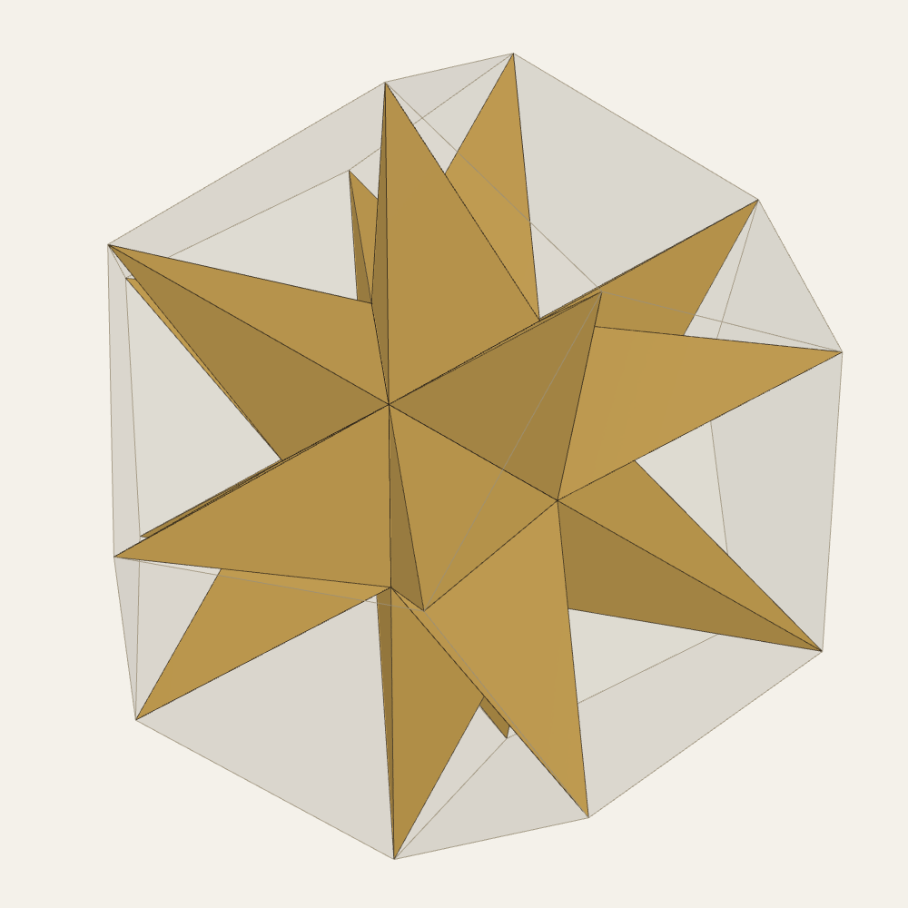
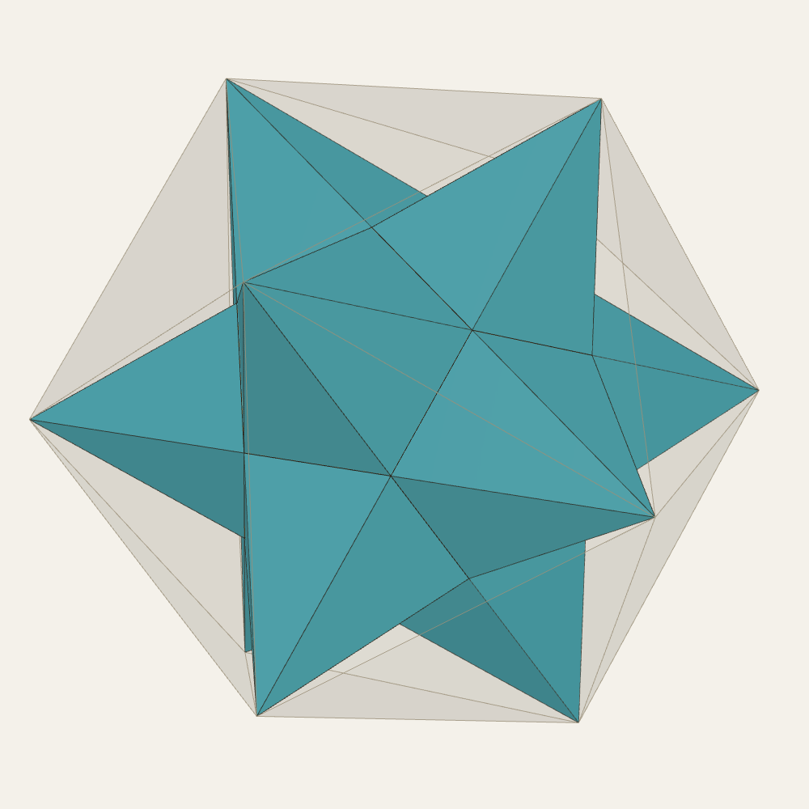
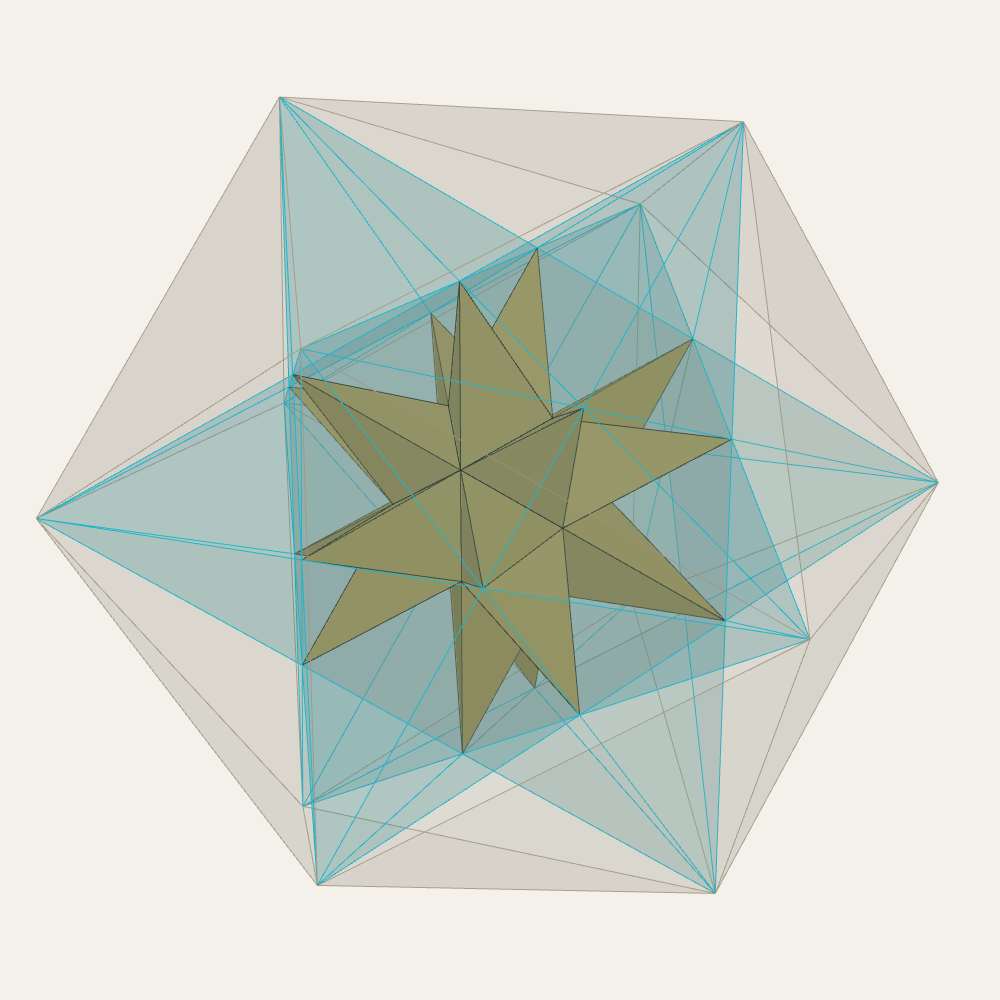
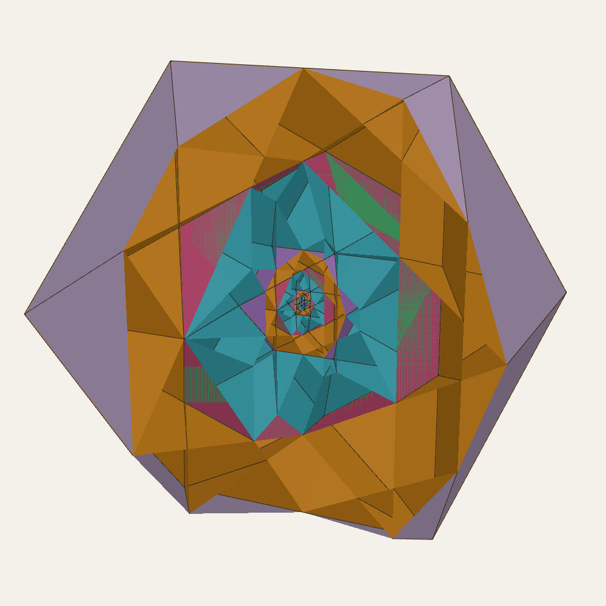
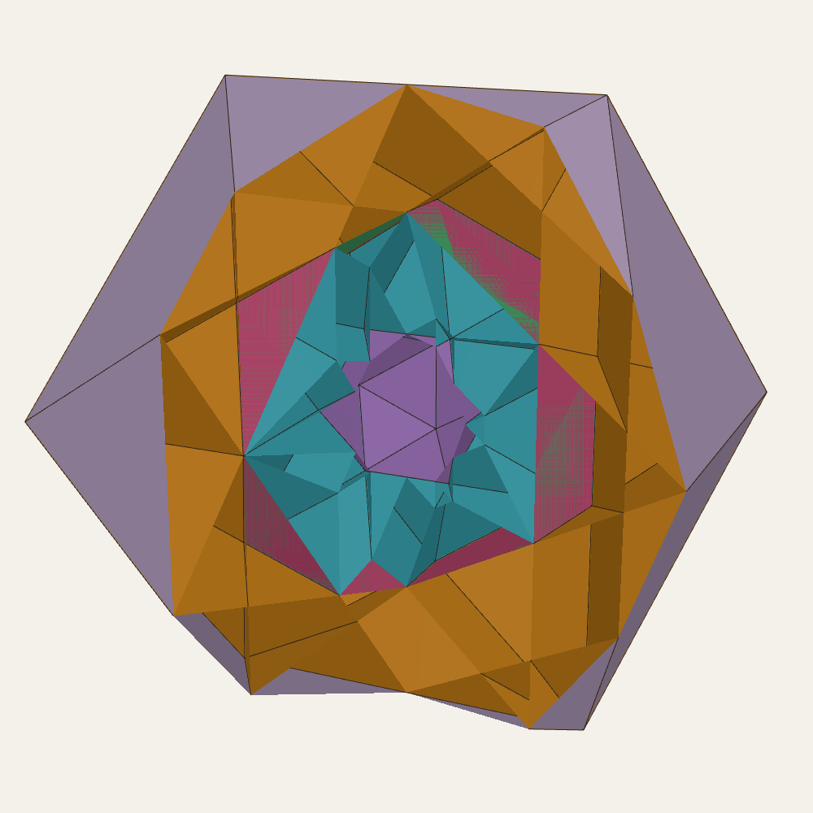
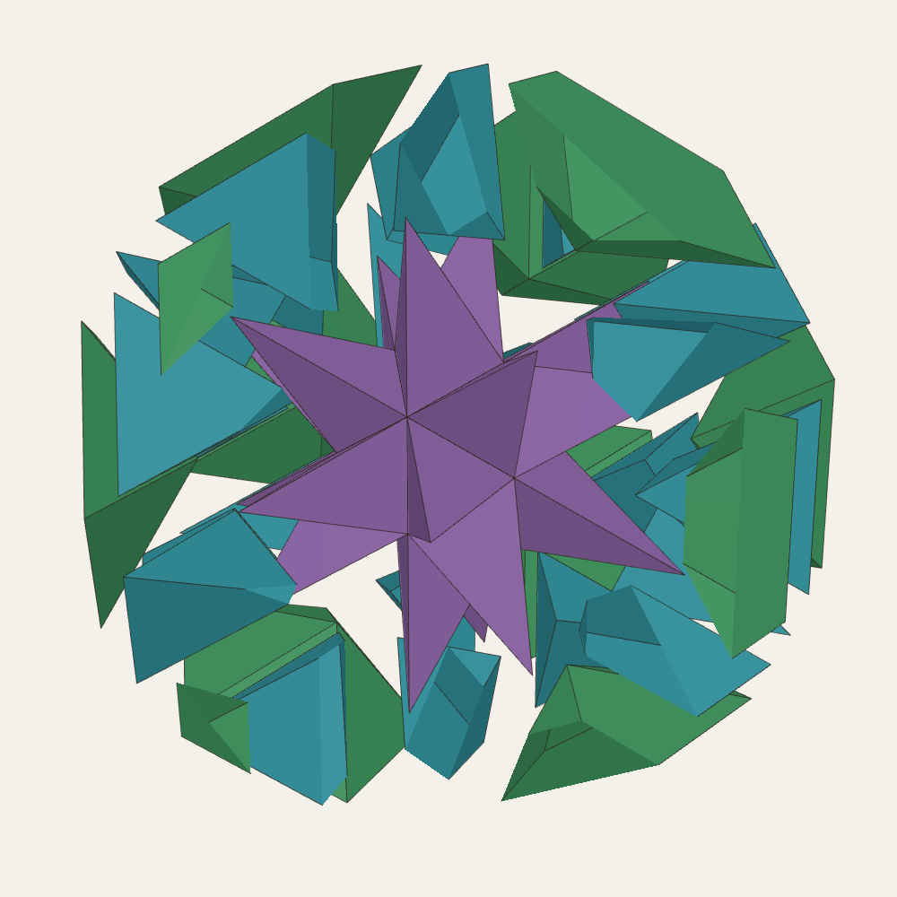
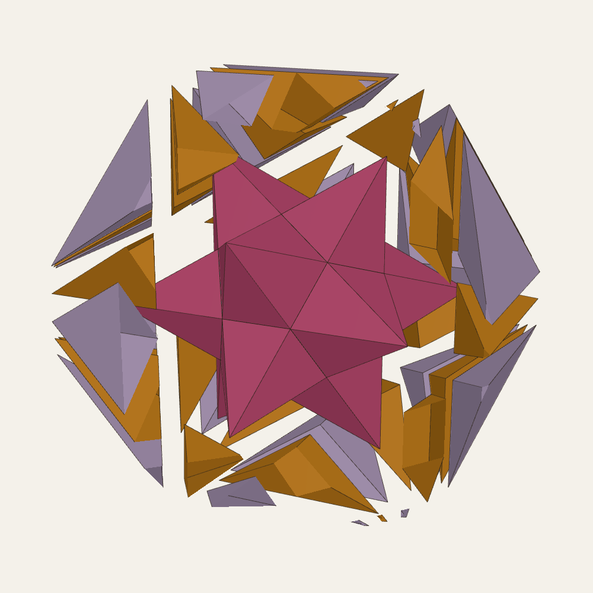

The tall companion to Universal PiTet (UP): the great and small stellated dodecahedra in an endless φ³ cycle, every shell filled exactly by one pattern, in golden reciprocity



Let I be the icosahedron of edge 1. On each face raise a pyramid whose tip lies at three times the face's distance from the centre: this is Kepler's great stellated dodecahedron (the spikes' sides fall into its twelve pentagram planes), and its twenty tips are the corners of a dodecahedron D1 of edge φ. On each face of D1 raise a pyramid with its tip at √5 times the face distance: Kepler's small stellated dodecahedron, whose twelve tips are the corners of the icosahedron I·φ³. That icosahedron starts the next turn. The stars and their hulls are classical [1–3, 13]; their icosahedral order is the same order that frustrates flat-space packings of tetrahedra [20]. What follows is the cycle's proportions and its fill.
| Edge | Spire height ÷ face radius | Star ÷ core (volume) | |
|---|---|---|---|
| I (core) | 1 | ||
| great stellated star on I | φ² | 3 (each spike = I/10) | |
| D1 (its hull) | φ | ||
| small stellated star on D1 | φ | √5 (12 spires = (√5 − 1)·D1) | |
| I·φ³ (its hull) | φ³ | one turn: ×φ⁹ |
Table 1. The proportions of one turn. The step on the triangles (three-fold axes) has the taller spire (φ²) and the smaller hull step (×φ); the step on the pentagons (five-fold) has the shorter spire (φ) and the larger hull step (×φ²). Every turn is the same.

Each shell, core → star → hull, is filled by the pattern of DICTO's Cleo star (DICTO DOI: 10.5281/zenodo.23378070): the star's spikes; one inward pyramid on each face of the hull, its apex at the core's corner beneath; and one valley tetrahedron on each edge of the core, its other two corners the tips of the two spikes beside that edge.
| Shell | Pieces | Exact volume of each | Is |
|---|---|---|---|
| I → great star → D1 | 20 spikes | 1/8 + √5/24 | DICTO's CLEO |
| 12 inward pyramids | 5/8 + 7√5/24 | DICTO's cap | |
| 30 valley tetrahedra | 1/6 + √5/12 | DICTO's AXE | |
| D1 → small star → I·φ³ | 12 spires | 5/3 + 3√5/4 | new here |
| 20 inward pyramids | 29/24 + 13√5/24 | new here: CLEO's reciprocal | |
| 30 valley tetrahedra | 3/4 + √5/3 | new here |
Table 2. The two shells of a turn. In each, the pieces fill core → hull exactly: the volumes sum to the gap with remainder exactly 0, every piece lies in the hull and outside the core, and no two overlap (an exact separating plane for every close pair). Each kind is one volume; each next turn repeats them φ³ larger.
The first shell is DICTO's AXE, CLEO and cap kit [9, 10], already published as in-between stages (Capturing the In-betweens, DICTO DOI: 10.5281/zenodo.23345502): icosahedron + 20 CLEO is the great stellated dodecahedron, + 30 AXE the excavated dodecahedron [4], + 12 caps the dodecahedron. CLEO and AXE are Mosseri–Sadoc tiles [5, 6]. The second shell's three pieces are not met before.
Golden reciprocity (exact). Measure each pyramid by its height over the circumradius of its base. The great star's spike (CLEO) stands at φ², and the second shell's inward pyramid at exactly 1/φ²; the small star's spire stands at φ, and the first shell's inward pyramid (the cap) at exactly 1/φ. Each star's points are met, in the other shell, by points turned inward whose height is their golden reciprocal: tall and flat, outward and inward, with products exactly 1 (DICTO's "opposite structures throughout", PiTet's principle).
| Point | (height ÷ base radius)² | Its reciprocal, in the other shell | (height ÷ base radius)² |
|---|---|---|---|
| great star's spike (CLEO) | 7/2 + 3√5/2 = φ⁴ | small shell's inward pyramid | 7/2 − 3√5/2 = φ⁻⁴ |
| small star's spire | 3/2 + √5/2 = φ² | great shell's inward pyramid (cap) | 3/2 − √5/2 = φ⁻² |
Table 3. The reciprocal pairs, exact (exact_reciprocal.py). In each pair the two values are Galois conjugates: √5 → −√5 turns one into the other.



DICTO relates the tall spires to the sculptors' practice of shaping a figure for its viewpoint (Gothic portal figures; Michelangelo's David, made for a place high above the viewer). A pinhole-camera model (float) gives two results. Seen from outside, on a spire's base plane at six base radii, the true spires already look almost right (corrections ×0.94 and ×1.03). Seen from inside, standing in a valley at a spike's foot, they look about three times squatter, and no height reads right, because added height recedes from view. In the Kaleidohedra app a reverse-perspective projection (REV) lets a viewer inside a shell see it open out instead.
Classical. The great and small stellated dodecahedra, their hulls and the φ³ step belong to Kepler [1] and Poinsot [2] and are part of the regular polyhedra [3, 13]; the great stellated dodecahedron's volume, three icosahedra, follows from the standard formulas. Stellation theory in general is set out by Messer for the rhombic triacontahedron [14]. Kepler already set the regular solids between concentric spheres [15].
Mosseri–Sadoc tiles and inflation. CLEO and AXE are Mosseri–Sadoc tiles [5]. Mosseri and Sadoc gave inflation rules for their tiles with factor τ; Papadopolos and Ogievetsky decorated them and derived the inflation matrix [16], and showed that the six golden tetrahedra admit no stone inflation for any power of τ [17]. Kramer reviews the central icosahedral fillings these come from [6]. Closest to this paper, Koca et al. tile icosahedral patches face to face with composite Mosseri–Sadoc tiles under an inflation whose volume eigenvalue is τ³, and find dodecahedra of edge 1 and τ in the second and third inflations [18]; Al Raisi et al. tile dodecahedra inflated by τⁿ with modified Mosseri–Sadoc tiles [19]. Those are tilings that inflate; the cycle here is different in kind: Kepler's two stars nested without end, each shell filled once by the Cleo star's pattern, the stars kept whole.
Not found in the sources checked (the full text of the 87 library sources in the appendix, and web searches on 19 October 2026): the endless star cycle filled by one pattern; the small stellated dodecahedron as √5 times its core; the second shell's fill, and the golden reciprocity between the stars' points and the inward pyramids. Related dissections of the stellated dodecahedra exist [7].
exact_kp.py (exact: the cycle, the volumes, the fill and no-overlap); kp.py, cleo_pattern.py (float exploration), perspective.py (the perspective model); export_figs.py and the figure page.
DICTO's reference library (private copies, with public citations in the Kaleidohedra repository's docs/SOURCES.md). The full text of the 87 sources below was searched on 19 October 2026 for this paper's subjects: the Kepler–Poinsot solids and stellation; Mosseri–Sadoc tiles, golden tetrahedra and their inflations; nested and concentric polyhedra; dodecahedra and icosahedra built from tiles.
| Author(s) | Year | Title |
|---|---|---|
| Luca Pacioli, Leonardo da Vinci (ill.) | 1509 | Divina proportione |
| Albrecht Dürer | 1525 | Underweysung der Messung mit dem Zirckel und Richtscheyt |
| Wenzel Jamnitzer, Jost Amman (engr.) | 1568 | Perspectiva corporum regularium |
| Johannes Kepler | 1596 | Prodromus dissertationum cosmographicarum continens Mysterium cosmographicum |
| Johannes Kepler | 1619 | Harmonices mundi libri V |
| E. S. Fedorov | 1885 | Elements of the Theory of Figures (Nachala ucheniya o figurah) |
| Euclid, T. L. Heath (tr.) | 1908 | The Thirteen Books of Euclid's Elements, Vol. III (Books X-XIII) |
| M. Goldberg | 1937 | A class of multi-symmetric polyhedra |
| R. Buckminster Fuller | 1954 | Building construction (geodesic dome) |
| R. Buckminster Fuller | 1961 | Synergetic building construction (octet truss) |
| R. Buckminster Fuller | 1962 | Tensile-integrity structures |
| Kenneth D. Snelson | 1965 | Continuous tension, discontinuous compression structures |
| Peter J. Pearce | 1971 | Synthesized natural geometric structures |
| Stephen C. Baer | 1973 | Structural system |
| John P. Hogan | 1976 | Homohedral construction employing icosahedron |
| Peter J. Pearce | 1976 | Minimum inventory maximum diversity building system |
| Haresh Lalvani | 1988 | Building structures based on polygonal members and icosahedral symmetry |
| Helmut Bergman | 1988 | Continuous spherical truss construction (US 4,719,726) |
| Haresh Lalvani | 1990 | Transformational part-count in layered octahedral-tetrahedral truss configurations (NASA TM-102635) |
| H. Lalvani | 1995 | Periodic space structures composed of two nodal polyhedra for design applications (US 5,448,868) |
| P. W. Messer | 1995 | Stellations of the rhombic triacontahedron and beyond |
| H. Lalvani | 1997 | Building systems with non-regular polyhedra based on subdivisions of zonohedra (US 5,623,790) |
| M. Baake, F. Gähler | 1998 | Symmetry structure of the Elser-Sloane quasicrystal |
| T. C. Hales | 1998 | An overview of the Kepler conjecture |
| M. Baake | 1999 | A guide to mathematical quasicrystals |
| O. Ogievetsky, Z. Papadopolos | 1999 | On Quasiperiodic Space Tilings, Inflation and Dehn Invariants |
| U. Betke, M. Henk | 1999 | Densest lattice packings of 3-polytopes |
| Z. Papadopolos, O. Ogievetsky | 1999 | On Inflation Rules for Mosseri-Sadoc Tilings |
| Z. Papadopolos, O. Ogievetsky | 1999 | On quasiperiodic space tilings, inflation and Dehn invariants |
| R. V. Moody | 2000 | Model sets: a survey |
| M. Senechal | 2004 | Donald and the golden rhombohedra |
| Wikipedia contributors (2007 mirror) | 2007 | Kyushindo (2007 version) |
| M. Koca, M. Al-Ajmi, N. O. Koca | 2009 | Grand antiprism and quaternions |
| M. Koca, M. Al-Ajmi, N. O. Koca | 2009 | Quaternionic representation of snub 24-cell and its dual polytope derived from E8 root system |
| S. Torquato, Y. Jiao | 2009 | Dense packings of polyhedra: Platonic and Archimedean solids |
| B. Grünbaum | 2010 | The Bilinski dodecahedron, and assorted parallelohedra, zonohedra, monohedra, isozonohedra and otherhedra |
| P. Kramer | 2010 | Gateways towards quasicrystals |
| A. M. Cutler, E. Schulte | 2011 | Regular polyhedra of index two, I |
| D. Frettlöh | 2011 | Icosahedral tilings in R3: the ABCK tilings (draft chapter) |
| J. Koskinen | 2011 | Unusual tilings and transformations |
| J. de Graaf, R. van Roij, M. Dijkstra | 2011 | Dense regular packings of irregular non-convex particles |
| M. Koca, N. O. Koca, M. Al-Ajmi | 2011 | Branching of the W(H4) polytopes and their dual polytopes under the Coxeter groups W(A4) and W(H3) represented by quaternions |
| M. Koca, N. O. Koca, M. Al-Barwani | 2011 | Snub 24-cell derived from the Coxeter-Weyl group W(D4) |
| T. Etzion | 2011 | Product constructions for perfect Lee codes |
| A. Garber, A. Gavrilyuk, A. Magazinov | 2012 | The Voronoi conjecture for parallelohedra with simply connected delta-surface |
| J. C. Lagarias, C. Zong | 2012 | Mysteries in packing regular tetrahedra |
| M. Baake, U. Grimm | 2012 | Mathematical diffraction of aperiodic structures |
| M. Koca, N. O. Koca, R. Koc | 2012 | Affine Coxeter group Wa(A4), quaternions, and decagonal quasicrystals |
| P. F. Damasceno, M. Engel, S. C. Glotzer | 2012 | Crystalline assemblies and densest packings of a family of truncated tetrahedra and the role of directional entropic forces |
| R. Gabbrielli, Y. Jiao, S. Torquato | 2012 | Families of tessellations of space by elementary polyhedra via retessellations of face-centered-cubic and related tilings |
| S. Torquato, Y. Jiao | 2012 | Organizing principles for dense packings of nonspherical hard particles: not all shapes are created equal |
| M. Kléman | 2013 | Defects in quasicrystals, revisited: I-flips, approximants, phason defects |
| N. Fujita, H. Takano, A. Yamamoto, A.-P. Tsai | 2013 | Cluster packing geometry for Al-based F-type icosahedral alloys |
| P.-P. Dechant, J. Wardman, T. Keef, R. Twarock | 2014 | Viruses and fullerenes: symmetry as a common thread? |
| A. Campello, G. C. Jorge, J. E. Strapasson, S. I. R. Costa | 2015 | Perfect codes in the lp metric |
| K. Deguchi, M. Nakayama, S. Matsukawa, K. Imura et al. | 2015 | Crystal structure of superconducting 1/1 cubic Au-Ge-Yb approximant with Tsai-type cluster |
| M. Baake, D. Damanik, U. Grimm | 2015 | What is aperiodic order? |
| M. Firsching | 2015 | Computing maximal copies of polytopes contained in a polytope |
| N. O. Koca, M. Koca, A. Al-Mukhaini, A. Al-Qanobi | 2015 | Quaternionic representations of the pyritohedral group, related polyhedra and lattices |
| R. Twarock, M. Valiunas, E. Zappa | 2015 | Orbits of crystallographic embedding of non-crystallographic groups and applications to virology |
| C. Hann, J. E. S. Socolar, P. J. Steinhardt | 2016 | Local growth of icosahedral quasicrystalline tilings |
| R. M. K. Dietl, J.-H. Eschenburg | 2016 | The icosahedral quasiperiodic tiling and its self-similarity |
| A. Stergiou | 2018 | Bootstrapping hypercubic and hypertetrahedral theories in three dimensions |
| A. Garber | 2019 | Voronoi conjecture for five-dimensional parallelohedra |
| D. Poland, S. Rychkov, A. Vichi | 2019 | The conformal bootstrap: theory, numerical techniques, and applications |
| R. Twarock, A. Luque | 2019 | Structural puzzles in virology solved with an overarching icosahedral design principle |
| T. Ishimasa | 2019 | Icosahedral quasicrystal, 1/1 and 2/1 approximants in Zn-based ternary alloys containing Au and Yb/Tb |
| A. Al-Siyabi, N. O. Koca, M. Koca | 2020 | Icosahedral Polyhedra from D6 lattice and Danzer's ABCK tiling |
| M. Koca, R. Koc, N. O. Koca, A. Al-Siyabi | 2020 | Icosahedral tiling with dodecahedral structures |
| N. O. Koca, R. Koc, M. Koca, A. Al-Siyabi | 2020 | Dodecahedral Structures with Mosseri-Sadoc Tiles |
| V. R. Krishnamurthy, E. Akleman, S. G. Subramanian et al. | 2020 | Bi-axial woven tiles: interlocking space-filling shapes based on symmetries of bi-axial weaving patterns |
| V. R. Krishnamurthy, E. Akleman, S. G. Subramanian, M. Ebert, J. Cui, C. Fu, C. Starrett | 2022 | Geometrically interlocking space-filling tiling based on fabric weaves |
| B.-X. Lao, S. Rychkov | 2023 | 3D Ising CFT and exact diagonalization on icosahedron: the power of conformal perturbation theory |
| D. Smith, J. S. Myers, C. S. Kaplan, C. Goodman-Strauss | 2023 | An aperiodic monotile |
| R. Akpanya et al. | 2024 | Topologically interlocking blocks inside the tetroctahedrille |
| I. J. Dejter, L. R. Fuentes, C. A. Araujo | 2025 | Perfect truncated-metric codes in lattice graphs and superlattice graphs |
| S. Rychkov | 2025 | Conformal bootstrap: from Polyakov to our times |
| M. Kovačević | 2026 | An isodiametric theorem and lattice diameter-perfect codes in A3 |
| R. Al Raisi, N. O. Koca, M. Koca, R. Koc | 2026 | Modified Mosseri-Sadoc tiles from D6 |
| Wikipedia contributors | 2026 | Fullerene |
| Wikipedia contributors | 2026 | Goldberg polyhedron |
| Wikipedia contributors | 2026 | Kenshiro Abbe |
| Wikipedia contributors | 2026 | Kyūshindō |
| Wikipedia contributors | 2026 | Mitsusuke Harada |
| Wikipedia contributors | 2026 | n-flake (Sierpinski icosahedron) |
| Betke Henk 2000 Densest lattice packings of 3 polytopes | ||
| INDEX |